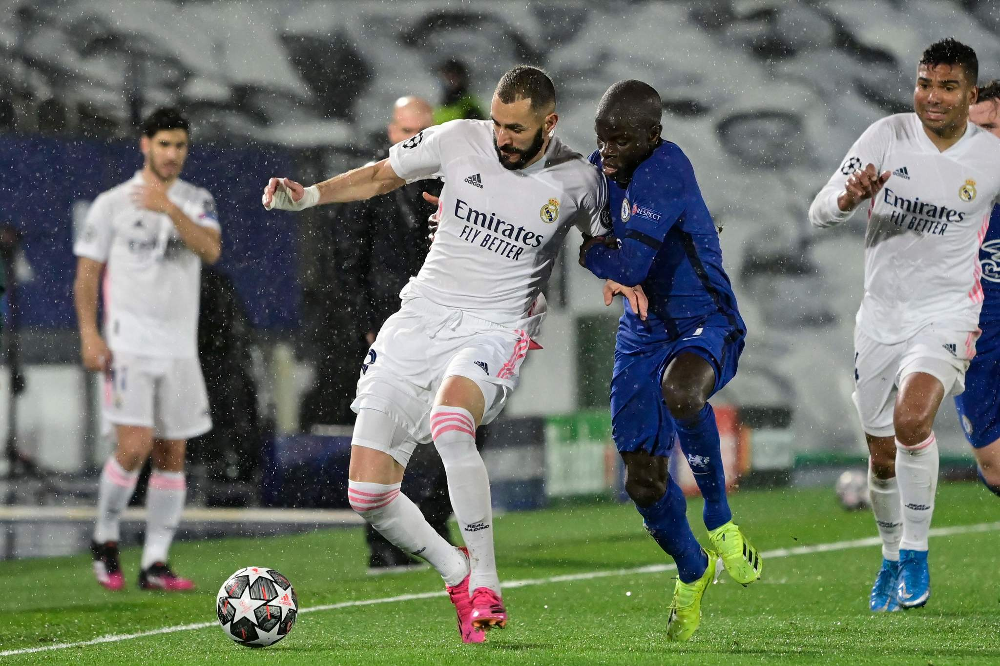

Futbol
Es un deporte de equipo jugado entre dos conjuntos de once jugadores cada uno y algunos árbitros que se ocupan de que las normas se cumplan correctamente. Es ampliamente considerado el deporte más popular del mundo, pues lo practican unas 270 millones de personas. También se le conoce como futbol asociación o fútbol asociación, nombre derivado de The Football Association, primera federación oficial del mundo en este deporte y que utilizó ese nombre para distinguirlo de otros deportes que incluyen la palabra "futbol" o "fútbol".En algunos países de habla inglesa también se le conoce como soccer, abreviatura de association, puesto que el nombre de football en esos países se asocia mayoritariamente a otros deportes con esa denominación (principalmente en Estados Unidos, donde el nombre football aplica para el fútbol americano, un deporte totalmente distinto). El terreno de juego es rectangular de césped natural o artificial, con una portería o arco a cada lado del campo. Se juega mediante una pelota que se debe desplazar a través del campo con cualquier parte del cuerpo que no sean los brazos o las manos, y mayoritariamente con los pies (de ahí su nombre). El objetivo es introducirla dentro de la portería o arco contrario, acción que se denomina marcar un gol. El equipo que logre más goles al cabo del partido, de una duración de 90 minutos, es el que resulta ganador del encuentro. El juego moderno fue reinventado en Inglaterra tras la formación de la Football Association, cuyas reglas de 1863 son la base del deporte en la actualidad. El organismo rector del fútbol es la Federación Internacional de Fútbol Asociación, más conocida por su acrónimo FIFA. La competición internacional de fútbol más prestigiosa es la Copa Mundial de Fútbol, organizada cada cuatro años por dicho organismo. Este evento es el más famoso y el que cuenta con mayor cantidad de espectadores del mundo, doblando la audiencia de los Juegos Olímpicos.
